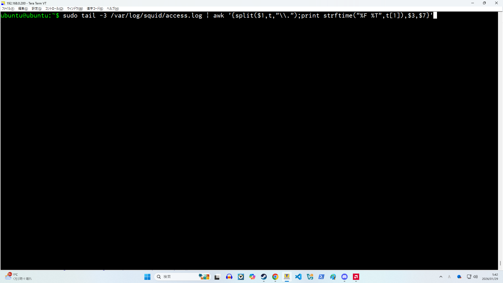
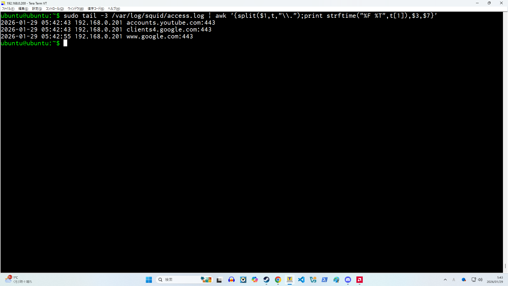
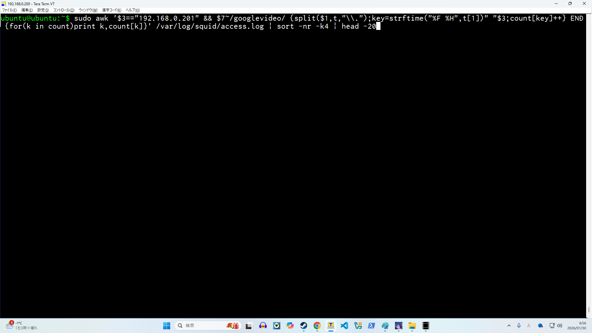
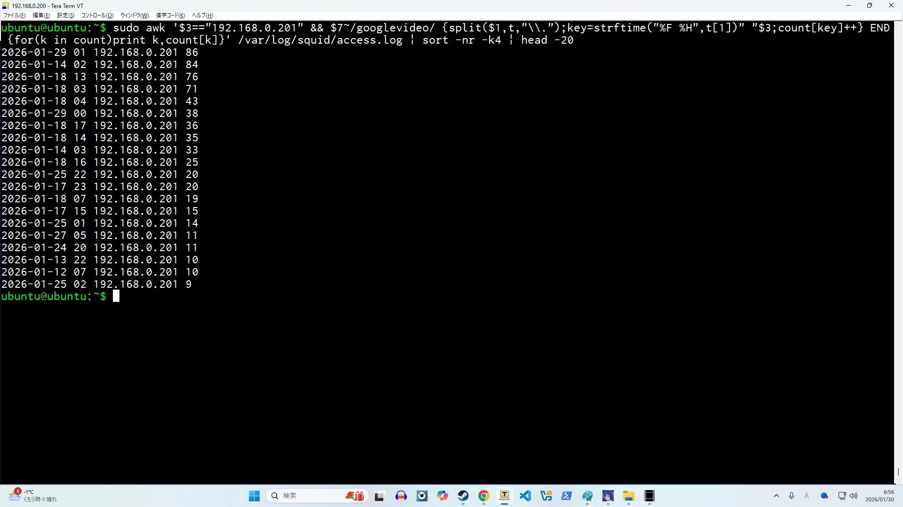

はじめに
※本ポートフォリオは技術検証を目的としたものです。
利用ポリシーで制限されている外部サービスへの通信が発生した場合を想定し
アクセスログの整形・抽出による検知方法を確認しています。
実際の運用では、就業規則やプライバシーへの配慮が前提となります。
プロキシサーバーとして「squid」を使ってみる
squid(スクイッド)とは、プロキシサーバーのうちのひとつです。
プロキシサーバーとは、内部ネットワークから外部へのアクセスを仲介するサーバーです。
proxy(転送する)server(サービスを提供するもの）ですね。
普通はパソコンが直接インターネットのサイトにアクセスしますが
プロキシサーバーを使うと、一度プロキシが間に入ってからサイトにアクセスします。
そう、この「仲介する」というのがポイントでして、プロキシサーバーは「仲介
する」といった過程で僕達ユーザーがどのサイトにアクセスしていたのかをアク
セスログを残すのです。
それでは次に、実際にサーバーに接続してアクセスログを見てみましょう。
sudo tail -3 /var/log/squid/access.log
(squidのアクセスログ、末尾から3行目まで見せて！ってコマンドです。）
はい
全然わかりませんね。
『1769538383.194』ってなに？？」と思いますよね。
調べてみたところ、このよくわからない円周率のような数字の羅列は
「Unixタイムスタンプ」といって協定世界時（UTC）の
1970年1月1日午前0時0分0秒からの経過秒数を表すものだそうです。
「なんで普通の時間で書かないの？」と疑問ですよね。
例えば日本のサーバーをハッキングした犯人を、海外のチームと協力して追うとします。
そしてみなさんご存知の通り、時間は地域によってバラつきがあります。
なので、アクセスログの時間表記が統一されてないとお互いの時間の認識に
齟齬が生じてしまうのですね。
でもこのままだと内部の時間はわかっても読むことができません。
そこで活躍するのが「awk」という汎用プログラミング言語です！
こちらUnix/Linux系統のカーネルを持つOSで使える言語でして
ログを整形して抽出することができます。
MacやAndroid、AWS(Amazon Web Services）のEC2内Amazon Linuxでも使用可能です。
余談ですがこのawk、製作者三人の名前の頭文字をとって、「awk」という名前に
したらしいです。仲良いですね。
さて、さきほどの出力をもう一度見てみましょう。
ここでみなさんに覚えてほしいawkのルールが少しございまして、それは
$1や$2はそれぞれ1列目、2列目を表す特殊変数といったものです。
そして、内部処理がどうやってそれが何列目か判別するのかというお話なのですが
答えは「スペース」です。awkはスペースを区切りとして列を判断してるんですね。
なので、上記の出力させたログの一番上の行の場合は「192.168.0.201」が「$3」。
「www.google.com:443」が「$7」です。
この$3や$7などの特殊変数を使ってログの「どこ」をどう処理するか、
「どこ」をどう出力させるかなどを決めるわけですね。
そして、この「192.168.0.201」という番号がIPといいまして、今回は説明を端折りますが
簡単に言うと「この人のPCだよ」と特定できる数列です。
「www.google.com:443」というのが
アクセスしているドメインを表しています。

sudo tail -3 /var/log/squid/access.log | awk '{split($1,t,"\\.");print strftime("%F %T",t[1]),$3,$7}'
sudo tail -3 /var/log/squid/access.log |
squidのアクセスログ、末尾から3行目まで出力。 「|」はパイプライン
と言ってその右のコマンドに標準入力を渡す記号です。
簡単に言うと、「ついでにこうして」って合図みたいなものです。
awk '{split($1,t,"\\.");
awkでsplit関数を使います。$1を対象にしてドットを区切りとしたtという連想配列を作ります。
print strftime("%F %T",t[1])
出力します。内容は、「strftime関数を使用。表示形式は「年-月-日 時:分:秒」
対象はさきほど作った「連想配列tの要素番号1の値」です。
,$3,$7}'
$3(3列目)と$7(7列目)のログも出力範囲に含めます。

これで日時がちゃんと読めるようになりましたね。
これにより、ログとしての可読性が向上します。
この出力例では、動画配信関連のドメインへの通信が確認できます。
さらに、特定条件に該当する通信を抽出し、
発生頻度の傾向を確認してみます。

sudo awk '$3=="192.168.0.201" && $7~/googlevideo/ {split($1,t,"\\.");key=strftime("%F %H",t[1])" "$3;count[key]++} END {for(k in count)print k,count[k]}' /var/log/squid/access.log | sort -nr -k4 | head -20
「192.168.0.201」のPCアクセスログで「googlevideo」というドメインが入ったアクセスを
時間を読みやすく表記したうえで
何時に何回アクセスがあったか、カウントして集計してください。
カウントが終わったら回数が多い順に並べてください。
最後に上位20件を出力してください。といった意味のコマンドを打ってみます。
※「googlevideo」は、動画配信サービス利用時に
高頻度でアクセスされるドメインです。

特定の通信が継続的に発生していることが分かります。
このように、プロキシログを整形抽出することで
通信の傾向を把握できることが確認できました。
生ログのままでは分かりづらい情報も、
少し手を加えるだけで意味のあるデータになります。
さいごに
今回初めてhtml/css/jsをいじってみましたが
スマホで確認してみたら表示がグチャグチャになっていたりと
大変な作業でしたが楽しかったです。様々なサイトがなぜ真ん中寄せ
のセクションで表示しているのか身を持って実感しました。
次作るときはもっとスムーズにできたらいいなぁ。。。
ここまで読んでいただきありがとうございました。